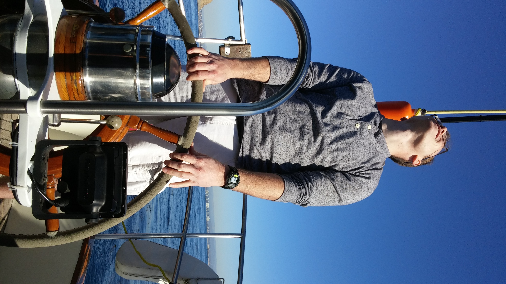
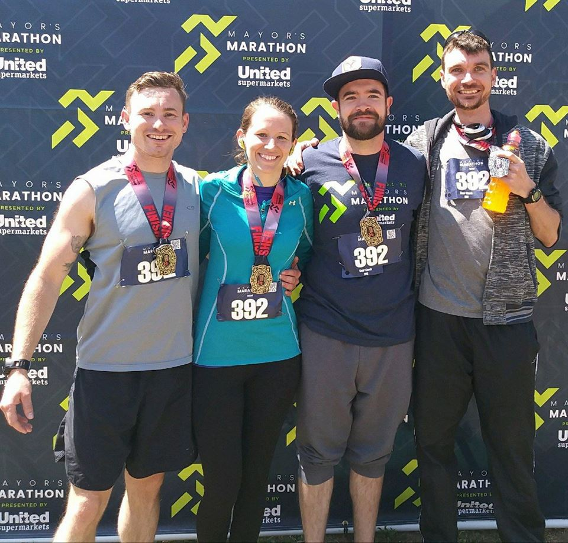

Hi, my name is Tristan! I'm a software developer born and raised under the West Texas sun (and dust ). I never imagined I would find myself in the computer world, let alone development. I was the kid growing up crawling through the mud and jumping off the roof, never really interested in technology (I also never thought I'd like brocoli). But as life often goes it's what you would never expect that ends up being what you were meant for all along (and I like brocoli now too!) To know why I love what I do, look through my story below!
Creativity
When I was a little boy I wanted to be a country music star. Guitar at age 5 didn't turn out so well, but eventually I picked up the drums, and even though I never became a country music star I toured as a professional musician for about six years. I love music because it's an expression of life through creation and it can connect/server people through a host of experiences. I believe coding is much the same.


Logic
When I was 18, after a failed attempt to join the Army (asthma will get ya!), I declared myself a Environment and The Humanities major, graduating Magna Cum Laude in the spring of 2012 from the Texas Tech Honors College. What I loved about EVHM was the mix of writing, ecology, and philosophy, all of which dealt heavily with logic. Learning how things fit together, seeing patterns, knowing what affects what is the kind of stuff that turns my little nerd heart on. It's part of why I also really enjoy Theology (give me a C.S. Lewis book any day) and now programming.
"Thirst was made for water; inquiry for truth." - C.S. Lewis
Endeavors
Maybe it's niave but I believe that for the most part you can learn whatever you want and get good at it. That's why there are many endeavors and skills I have jumped into over the years, and there are many more I want to master. There's always something to learn in the technology world, a different path or opportunity to take. It demands constant growth, which is not easy, but is always worth it.
- A few of My Interests
- Brazilian Jiu-Jitsu
- 
- 